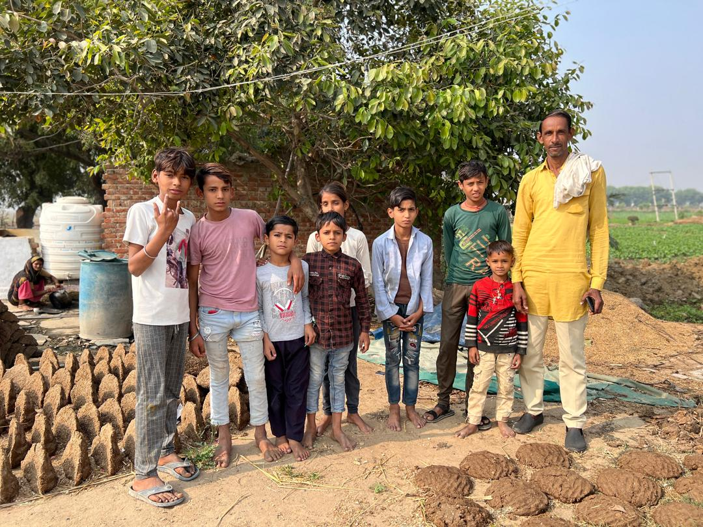
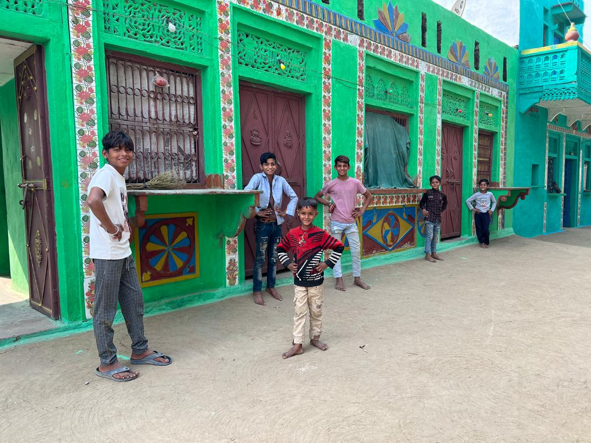

Real Story · 中文
26/11/2023，我在 Morena 路边停了下来。
那天我在印度 Morena 一带开车，看到路边有一排排我不认识的东西。 它们被晒在地上，形状很整齐，看起来像某种手工做出来的东西。
我很好奇，就把 Toyotaki 停下来，想问问他们那是什么。 我的英文他们不一定完全听得懂，他们的语言我也不懂。 所以我们就用简单英文、手势和笑容沟通。
后来我才知道，那些是 cow dung cakes。 对，就是牛粪饼。
很好笑。在我原本的生活里，牛粪就是牛粪。 可是在那一天的 Morena，它们被晒在阳光下，排在泥地上， 旁边站着孩子、家人、田地，还有一间颜色非常漂亮的绿色房子。
更让我感动的是，他们没有因为我的好奇而觉得被冒犯。 他们很自然地回应我，也很开心地配合我拍照。 我用手势请他们站一站，他们就真的站好，像把那一刻送给我。
印度路上的人常常让我有这种感觉： 你可以停下来，可以问，可以好奇。 很多时候，人们不会把你的好奇推开，反而会笑着把你带进他们的日常。

English Memory Summary
Even cow dung became part of a beautiful memory.
On 26/11/2023, while driving through Morena, India, Tuzi saw something arranged by the roadside and stopped out of curiosity.
She tried asking the local people what they were, using simple English, hand gestures, and smiles. Later, she realised they were cow dung cakes.
In her old life, cow dung was just cow dung. But that day in Morena, under the sun, beside children, fields, and a beautifully painted green house, even cow dung became part of a memory.
What stayed with Tuzi was not only the answer, but the way people welcomed her curiosity. They happily followed her hand gestures and posed for photos, turning a simple question into a warm roadside moment.
Heart Statement
世界有时候就是这样。
你停下来，是因为不懂。 你问了，才发现答案很朴素。
可是记忆留下来的时候，却一点都不普通。
那间绿色房子很美。 但更美的是，他们没有把我的好奇推开。
The answer may be simple, but the memory is not.